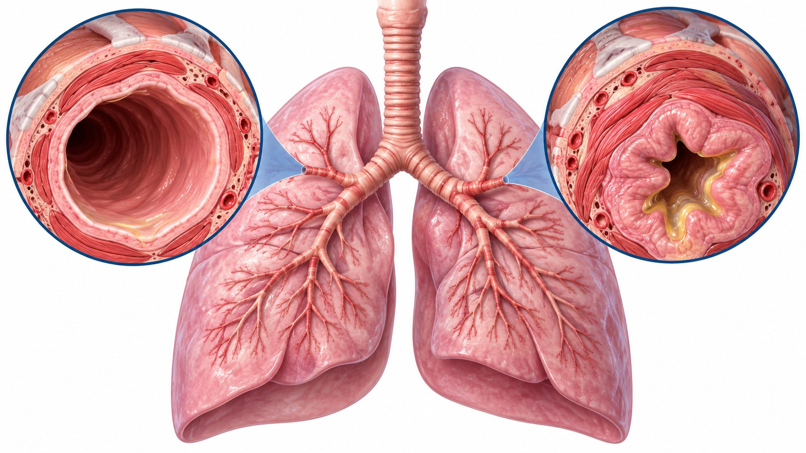

CLINICAL LEARNING · 아산 28회
COPD와 천식의
흡입치료 선택
검사 결과 → 질환 해석 → 치료 선택
폐쇄성 장애는 검사 결과를 기술하는 용어이다


폐쇄 여부와 중증도는 같은 숫자가 아니다
폐쇄 여부를 확인한 뒤 FEV1 예측치 비율을 본다
| 분류 | FEV1 (% 정상 예측치) | 먼저 확인할 조건 |
|---|---|---|
| 경증 | ≥80% | FEV1/FVC <0.7 |
| 중등증 | 50–<80% | FEV1/FVC <0.7 |
| 중증 | 30–<50% | FEV1/FVC <0.7 |
| 최중증 | <30% | FEV1/FVC <0.7 |
Bronchodilator response의 측정 절차
FEV1 또는 FVC 증가율과 절대 변화량
연자는 두 질환의 변별력이 생각보다 약하다고 설명했다
Q&A 모음집 98–99쪽
강의 도식: 흡입 항콜린제 + 흡입 β 항진제
강의 도식: 흡입 스테로이드 + 흡입 β 항진제
COPD 관리의 세 기둥으로 소개한 비약물 접근
오연목 연자 Q&A · 모음집 97·99쪽
오연목 연자 Q&A · 모음집 97쪽
예측식 · 정도관리 · 환자 노력
Q&A 모음집 98–99쪽
검사 결과 → 질환 해석 → 치료 선택